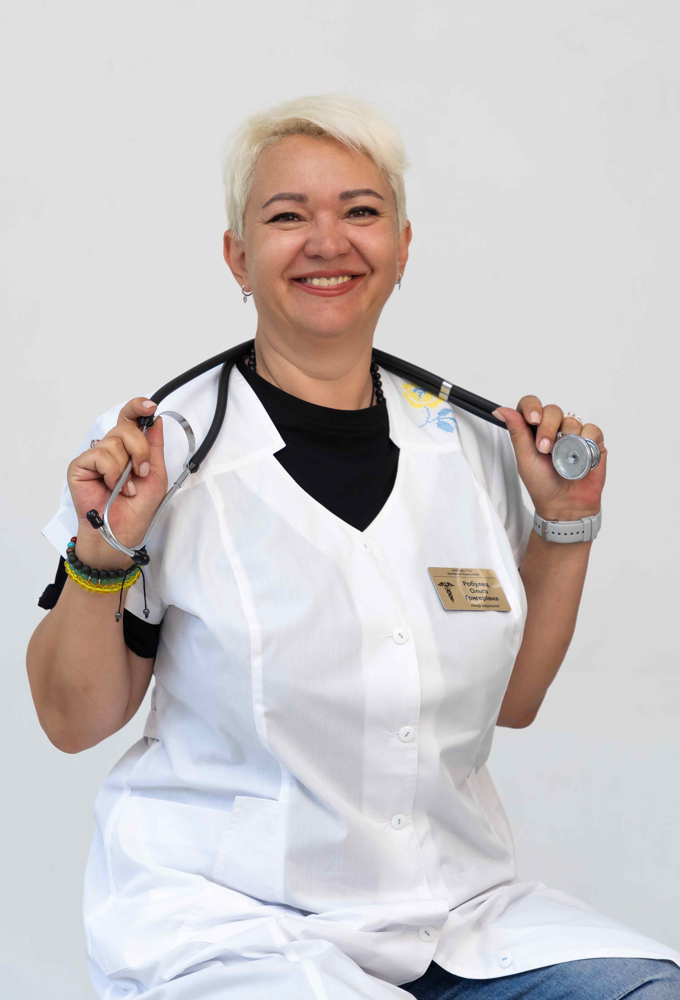

+38(068)
79 72 782
+38(068)
79 72 782Капельница от алкоголя в Киевском районе Харькова
Круглосуточная помощь при запое

Бесплатная консультация, работаем круглосуточно 24/7
Круглосуточная помощь при запое
Дата написания: 18 окт. 2026 г.
Последнее обновление: 22 окт. 2026 г.
Капельница от алкоголя в Киевском районе Харькова — медицинская процедура, которая может применяться при выраженном обезвоживании, нарушениях водно-электролитного баланса и некоторых осложнениях после длительного употребления спиртных напитков. Круглосуточная наркологическая помощь в Харькове позволяет обратиться за консультацией врача, пройти обследование и при наличии медицинских показаний получить необходимое лечение в домашних условиях. Инфузионная терапия назначается индивидуально с учетом возраста пациента, продолжительности запоя, сопутствующих заболеваний и общего состояния здоровья. Вызов нарколога на дом в Киевском районе Харькова может потребоваться при выраженном ухудшении самочувствия после алкоголя, многократной рвоте, слабости, треморе, учащенном сердцебиении и признаках алкогольной абстиненции.
Капельница от алкоголя может назначаться при выраженном обезвоживании, многократной рвоте, нарушениях электролитного баланса и других состояниях, когда пациент нуждается во внутривенном введении растворов. Необходимость процедуры определяется после осмотра нарколога, поскольку далеко не каждому человеку после употребления спиртного требуется инфузионная терапия. Поводом для обращения за медицинской помощью могут стать продолжительный запой, выраженная слабость, головокружение, невозможность самостоятельно восполнить потерю жидкости и ухудшение общего состояния. Отдельного внимания требуют пациенты с заболеваниями сердца, печени, почек и сахарным диабетом. Капельница от алкоголя на дому проводится только при наличии показаний и отсутствии противопоказаний. При легком похмелье обычно достаточно отдыха и питья, тогда как тяжелые осложнения требуют стационарного лечения.
Алкогольная интоксикация развивается вследствие токсического воздействия этилового спирта на центральную нервную систему и внутренние органы. Выраженность симптомов зависит от количества употребленного алкоголя, особенностей организма, сопутствующих заболеваний и продолжительности употребления. Наиболее распространенными проявлениями являются тошнота, рвота, головная боль, головокружение, общая слабость, нарушение координации движений и сонливость. После длительного запоя могут появляться тремор рук, повышенная потливость, тревожность, бессонница, тахикардия и колебания артериального давления. Эти симптомы нередко связаны с развитием алкогольного абстинентного синдрома. При тяжелом состоянии возможны судорожные приступы, галлюцинации, спутанность сознания и выраженные нарушения дыхания. Такие проявления требуют немедленного обращения за экстренной медицинской помощью.
Продолжительное употребление спиртных напитков оказывает неблагоприятное воздействие на печень, сердце, головной мозг, поджелудочную железу и другие органы. Повторяющиеся запои могут сопровождаться обезвоживанием, нарушением питания, дефицитом витаминов и ухудшением течения хронических заболеваний. При алкогольной зависимости повышается риск развития заболеваний печени, панкреатита, артериальной гипертензии, нарушений сердечного ритма и поражения нервной системы. Особую опасность представляет тяжелый алкогольный абстинентный синдром, который может возникать после прекращения продолжительного употребления алкоголя. Лечение алкогольной зависимости в Киевском районе Харькова предусматривает не только устранение острых симптомов, но и оценку общего состояния здоровья. После стабилизации пациенту может потребоваться дальнейшее наблюдение нарколога и комплексная противорецидивная терапия.
Капельница от алкоголя на дому в Харькове возможна при стабильном состоянии пациента, отсутствии признаков тяжелой интоксикации и медицинских противопоказаний. Перед процедурой нарколог уточняет жалобы, продолжительность употребления алкоголя, наличие хронических заболеваний и принимаемых лекарственных препаратов. Во время осмотра врач измеряет артериальное давление, пульс, сатурацию кислорода, оценивает уровень сознания и признаки обезвоживания. При необходимости выполняется ЭКГ и назначаются дополнительные исследования. На основании обследования определяется необходимость инфузионной терапии и ее состав. Самостоятельное внутривенное введение растворов без назначения врача опасно. Неправильный выбор препаратов, объема жидкости или скорости инфузии способен вызвать серьезные осложнения. Если состояние пациента нестабильно, медицинскую помощь необходимо оказывать в стационаре.
Состав капельницы от алкоголя определяется индивидуально и зависит от состояния пациента, результатов обследования и выявленных нарушений. Универсальной схемы инфузионной терапии, подходящей каждому человеку после употребления спиртного, не существует. При наличии медицинских показаний могут применяться изотонические растворы для восполнения жидкости, препараты для коррекции электролитного баланса и тиамин — витамин B1, особенно при длительном употреблении алкоголя и недостаточном питании. Растворы глюкозы используются при соответствующих показаниях, например при гипогликемии. При выраженной тошноте и рвоте врач может назначить противорвотные средства. При алкогольном абстинентном синдроме дополнительно рассматривается необходимость специальных лекарственных препаратов для уменьшения симптомов отмены и предупреждения осложнений. Капельница от алкогольной интоксикации должна включать только обоснованные компоненты и проводиться под медицинским наблюдением.
Детоксикация от алкоголя в Харькове представляет собой медицинскую помощь, направленную на стабилизацию состояния пациента и коррекцию нарушений, возникших вследствие продолжительного употребления спиртных напитков. Объем лечения зависит от выраженности симптомов и сопутствующих заболеваний. Перед началом терапии нарколог проводит обследование, оценивает степень обезвоживания, возможные нарушения электролитного баланса и риск алкогольной абстиненции. При необходимости назначаются инфузионные растворы, витаминные препараты и другое лечение по медицинским показаниям. После проведения процедуры врач повторно оценивает состояние пациента и дает рекомендации по дальнейшему восстановлению. Детоксикация не является способом мгновенного очищения организма от алкоголя и не устраняет зависимость. Для предупреждения повторных запоев необходимо продолжать лечение основного заболевания.
Сильное похмелье может сопровождаться головной болью, сухостью во рту, тошнотой, слабостью, повышенной чувствительностью к свету и общим недомоганием. Выраженность симптомов зависит от количества выпитого спиртного и индивидуальных особенностей организма. В большинстве случаев неосложненное похмелье постепенно проходит самостоятельно. Если человек способен нормально пить жидкость, внутривенная инфузия обычно не требуется. При многократной рвоте, выраженном обезвоживании и невозможности восполнения жидкости через рот необходима медицинская оценка. Капельница от похмелья на дому в Харькове может назначаться по показаниям после исключения опасных осложнений. Врач определяет подходящий способ восполнения жидкости и необходимость дополнительного лечения.
Продолжительный запой может сопровождаться формированием физической зависимости от алкоголя. После прекращения употребления спиртного у пациента иногда развивается алкогольный абстинентный синдром, проявляющийся тремором, тревогой, потливостью, бессонницей, учащенным сердцебиением и другими нарушениями. Капельница при запое на дому может использоваться для коррекции обезвоживания и электролитных нарушений, если врач выявил соответствующие показания. Однако основное лечение алкогольной абстиненции не ограничивается инфузионной терапией. При клинически значимых симптомах отмены требуются специальные лекарственные препараты и медицинское наблюдение. Особого внимания заслуживают пациенты, ранее перенесшие судороги, алкогольный делирий или тяжелую абстиненцию. При высоком риске осложнений рекомендуется госпитализация.
Вывод из запоя на дому в Киевском районе Харькова предусматривает обследование пациента, определение тяжести алкогольного абстинентного синдрома и подбор индивидуального лечения. Основная задача медицинской помощи заключается в безопасном прекращении употребления алкоголя и предупреждении возможных осложнений. При легком течении абстиненции, отсутствии серьезных сопутствующих заболеваний и наличии возможности медицинского наблюдения лечение может проводиться амбулаторно. Нарколог назначает соответствующие препараты, дает рекомендации по режиму и определяет необходимость дополнительных процедур. При тяжелом синдроме отмены, выраженных психических нарушениях, судорогах или нестабильном состоянии лечение алкогольной абстиненции в Харькове необходимо проводить в условиях стационара. После завершения первоначального лечения пациенту рекомендуется консультация по вопросам дальнейшей терапии алкогольной зависимости, поскольку прекращение запоя не гарантирует отсутствие повторного употребления спиртного.
Лечение алкогольной интоксикации зависит от степени тяжести состояния пациента, уровня сознания, характера дыхания и наличия осложнений. При легком алкогольном опьянении обычно достаточно наблюдения и поддерживающих мероприятий, тогда как тяжелая интоксикация требует неотложной медицинской помощи. Лечение алкогольной интоксикации в Харькове может включать оценку жизненно важных показателей, коррекцию обезвоживания, лечение выявленных нарушений обмена веществ и наблюдение за состоянием пациента. При этом инфузионная терапия назначается только при необходимости. При потере сознания, редком или нерегулярном дыхании, судорогах, выраженном нарушении координации с невозможностью поддерживать безопасность или подозрении на тяжелое отравление необходимо вызвать скорую помощь по номеру 103 или 112. Обычная домашняя капельница не заменяет экстренное лечение.
Продолжительность инфузионной терапии зависит от назначенных растворов, объема жидкости, скорости введения и состояния пациента. В среднем медицинская помощь, включая предварительный осмотр, проведение процедуры и последующее наблюдение, может занимать приблизительно от 1 до 3 часов. Во время капельницы медицинский работник контролирует самочувствие пациента, артериальное давление, пульс и другие показатели при необходимости. После завершения инфузии врач оценивает результат и определяет необходимость дальнейшего наблюдения. Следует учитывать, что капельница от алкоголя на дому не всегда завершает лечение. При алкогольной абстиненции симптомы могут сохраняться или усиливаться в последующие дни, поэтому продолжительность терапии определяется индивидуально.
Инфузионная терапия требует осторожности при тяжелой сердечной и почечной недостаточности, выраженных нарушениях электролитного баланса, риске перегрузки жидкостью и аллергических реакциях на назначенные препараты. В таких случаях врач оценивает возможные риски и выбирает безопасный метод лечения. Домашняя процедура не подходит пациентам с тяжелой алкогольной интоксикацией, судорожными приступами, выраженной спутанностью сознания, галлюцинациями и подозрением на алкогольный делирий. Госпитализация также может потребоваться при серьезных нарушениях сердечного ритма и нестабильных жизненно важных показателях. Наркологический стационар в Харькове позволяет проводить лечение под постоянным медицинским контролем, своевременно корректировать терапию и реагировать на опасные изменения состояния пациента.
Восстановление после алкогольной интоксикации зависит от количества употребленного спиртного, длительности запоя, состояния внутренних органов и наличия алкогольной зависимости. После стабилизации состояния важно соблюдать рекомендации врача и избегать повторного употребления алкоголя. При отсутствии противопоказаний рекомендуется достаточное поступление жидкости, полноценное питание, нормализация сна и постепенное возвращение к обычной физической активности. Пациентам с хроническими заболеваниями могут потребоваться дополнительные обследования и коррекция лечения. Если алкогольная интоксикация связана с повторяющимися запоями, рекомендуется консультация нарколога в Харькове для оценки зависимости и подбора противорецидивной терапии. Медикаментозное лечение, психотерапия и реабилитация помогают снизить вероятность повторных эпизодов употребления.
Стоимость капельницы от алкоголя в Киевском районе Харькова начинается от 2199 грн.
| Популярные услуги | Цена |
|---|---|
| Нарколог Харьков | От 1500 грн |
| Лечение наркомании | От 2499 грн |
| Капельница от наркотиков | От 2499 грн |
| Вывод из запоя на дому Харьков | От 2199 грн |
Анонимная наркологическая помощь в Киевском районе Харькова предусматривает конфиденциальное обращение за консультацией и лечением осложнений употребления алкоголя. Медицинская информация защищается врачебной тайной в соответствии с законодательством Украины. Пациент может получить консультацию нарколога, пройти обследование и обсудить возможные методы лечения алкогольной зависимости. Медицинские вмешательства проводятся с учетом принципов добровольного информированного согласия. Анонимный вызов нарколога на дом позволяет получить помощь в привычной обстановке без посещения медицинского учреждения, если состояние пациента допускает домашнее лечение. При этом конфиденциальность не означает полного отсутствия медицинской документации. Условия регистрации и ведения записей необходимо уточнять в выбранной медицинской организации.
При организации вызова нарколога в Киевский район Харькова учитываются точный адрес пациента, загруженность медицинской бригады, дорожная обстановка и текущие условия безопасности в городе. Ориентировочное время прибытия нарколога составляет 20–40 минут, однако фактическое время выезда необходимо уточнять у диспетчера. При воздушных тревогах, ограничениях передвижения и других обстоятельствах ожидание может увеличиваться. Для предварительной оценки состояния рекомендуется сообщить возраст пациента, продолжительность употребления алкоголя, время последнего приема спиртного, основные жалобы и наличие хронических заболеваний. Если появляются судороги, потеря сознания, тяжелые нарушения дыхания или выраженная спутанность сознания, следует немедленно вызвать экстренную медицинскую помощь, не ожидая планового приезда нарколога.
Чтобы организовать вызов нарколога для капельницы от алкоголя в Киевском районе Харькова, необходимо связаться с медицинской службой и сообщить основные сведения о состоянии пациента. При обращении желательно указать точный адрес, возраст человека, продолжительность употребления спиртного, время последнего приема алкоголя и основные симптомы. Также важно сообщить об имеющихся хронических заболеваниях, аллергических реакциях и принимаемых лекарственных препаратах. После предварительной оценки обращения согласовываются возможность выезда, ориентировочное время прибытия и условия медицинской помощи. По прибытии врач проводит осмотр и определяет, требуется ли инфузионная терапия или другие методы лечения. Срочный вызов нарколога на дом в Харькове позволяет получить профессиональную оценку состояния и определить безопасную тактику медицинской помощи при осложнениях употребления алкоголя.
Круглосуточная помощь врача-нарколога в Харькове позволяет обратиться за медицинской консультацией при алкогольной интоксикации, длительном запое, абстинентном синдроме и ухудшении самочувствия после употребления спиртных напитков. Нарколог на дом в Киевском районе Харькова может провести обследование, оценить выраженность симптомов и определить необходимость медикаментозного лечения. При стабильном состоянии пациента и наличии показаний возможно проведение капельницы от алкоголя в домашних условиях. Если состояние требует интенсивной терапии или постоянного наблюдения, рекомендуется госпитализация.
Телефон для консультации и вызова нарколога на дом в Харькове: +38(050-021-69-57)

Статья проверена экспертом
Робулец Ольга
Врач нарколог, ординатор
Возможно интересная статья:
Выход из запоя уменьшением дозы алкоголя («лесенкой»)
Капельница от алкоголя может потребоваться при выраженном обезвоживании, многократной рвоте, нарушении водно-электролитного баланса и других осложнениях после употребления спиртных напитков. При длительном запое также необходимо оценить риск алкогольной абстиненции.
Да, это самый эффективный способ. В отличие от таблеток, препараты из капельницы попадают напрямую в кровь, моментально восстанавливая дефицит жидкости, электролитов и снимая головную боль, тремор и тошноту.
Капельница от алкоголя на дому возможна при стабильном состоянии пациента и отсутствии признаков тяжёлых осложнений. Перед процедурой нарколог оценивает сознание, дыхание, артериальное давление, пульс и сопутствующие заболевания. При необходимости проводится ЭКГ. Если обнаруживаются судороги, галлюцинации, нарушения сознания или другие опасные симптомы, требуется экстренная медицинская помощь и возможная госпитализация.
Скорость улучшения самочувствия зависит от степени интоксикации, выраженности обезвоживания, сопутствующих заболеваний и состава назначенной терапии. При наличии показаний восполнение жидкости может облегчить отдельные симптомы уже во время процедуры. Однако капельница после алкоголя не ускоряет существенно выведение этанола из организма и не гарантирует полного восстановления за несколько часов. При алкогольной абстиненции может потребоваться дополнительное лечение.
Состав подбирается индивидуально врачом после осмотра, но стандартно включает:
Постановка капельницы от алкоголя на дому вместе с осмотром и последующим контролем состояния может занимать приблизительно 1–3 часа. Продолжительность самой инфузии зависит от назначенного раствора, необходимого объёма жидкости и реакции пациента. Во время процедуры врач контролирует жизненно важные показатели. При тяжёлой интоксикации или выраженной алкогольной абстиненции одной процедуры может быть недостаточно, поэтому продолжительность лечения определяется индивидуально.
Капельница при запое может использоваться для коррекции обезвоживания и отдельных нарушений, возникших на фоне продолжительного употребления алкоголя. Однако инфузионная терапия не является самостоятельным полноценным лечением запоя. После прекращения употребления спиртного возможно развитие опасного алкогольного абстинентного синдрома. При длительном запое, особенно сопровождающемся судорогами, спутанностью сознания или галлюцинациями, может потребоваться лечение в стационаре.
Возможность проведения капельницы при алкогольном опьянении определяется врачом после оценки состояния пациента. Само наличие алкоголя в организме не является безусловным противопоказанием к инфузионной терапии, однако капельница не обеспечивает быстрого протрезвления. При выраженной сонливости, нарушении дыхания, потере сознания или подозрении на тяжёлое алкогольное отравление необходима экстренная помощь. Самостоятельно проводить инфузии или вводить седативные препараты опасно.
Количество процедур зависит от продолжительности запоя, степени обезвоживания, выраженности абстиненции и сопутствующих заболеваний. В некоторых случаях инфузионная терапия вообще не требуется, а в других необходимы дополнительные медицинские мероприятия. Детоксикация от алкоголя не должна оцениваться только количеством капельниц. Нарколог определяет дальнейшее лечение по состоянию пациента, а при тяжёлой абстиненции рекомендует стационарное наблюдение.
Повышенное артериальное давление и учащённое сердцебиение требуют обязательной медицинской оценки перед инфузионной терапией. Эти симптомы могут быть связаны с алкогольной абстиненцией, обезвоживанием или сердечно-сосудистыми осложнениями. Капельница от алкоголя при высоком давлении не является универсальным способом снижения давления или нормализации пульса. При боли в груди, выраженной одышке, нарушении сознания или других опасных симптомах необходимо вызвать скорую помощь.
Госпитализация при алкогольной интоксикации необходима при тяжёлом нарушении сознания, угнетении дыхания, судорогах, выраженных сердечно-сосудистых осложнениях и подозрении на алкогольный делирий. Опасными признаками также являются галлюцинации, выраженная спутанность сознания и неконтролируемая рвота с обезвоживанием. В таких ситуациях домашняя капельница не обеспечивает необходимого уровня безопасности. Следует немедленно вызвать скорую помощь по номеру 103.
Да. Наркологическая служба UmbrellaPlus оказывает помощь полностью анонимно. Данные пациента не передаются в государственные реестры, на работу или по месту учебы.
Противопоказания и ограничения зависят от состава раствора, объёма инфузии и состояния пациента. Особая осторожность необходима при сердечной и почечной недостаточности, выраженных электролитных нарушениях и других тяжёлых заболеваниях. При нарушении сознания, судорогах или нестабильном состоянии домашняя инфузия может быть небезопасной. Капельница для детоксикации от алкоголя проводится только после осмотра нарколога и определения медицинских показаний.
Чтобы организовать вызов нарколога на дом для капельницы от алкоголя, необходимо связаться с медицинской службой UmbrellaPlus и сообщить возраст пациента, продолжительность употребления спиртного, время последнего приёма алкоголя и основные симптомы. Врач проводит осмотр, оценивает состояние и определяет необходимость инфузионной терапии. При стабильном состоянии помощь может быть оказана на дому.
Номер телефона:
+380 (68) 797 27 82
+380 (50) 021 69 57
Адрес наркологического центра вашего города уточняйте по
телефону
Работаем в: Киеве, Одессе, Львове, Харькове, Днепре,
Запорожье, Черкассах, Чугуеве, Черноморске, Каменском
Telegram: t.me/umbrellaplus
График работы: Круглосуточно